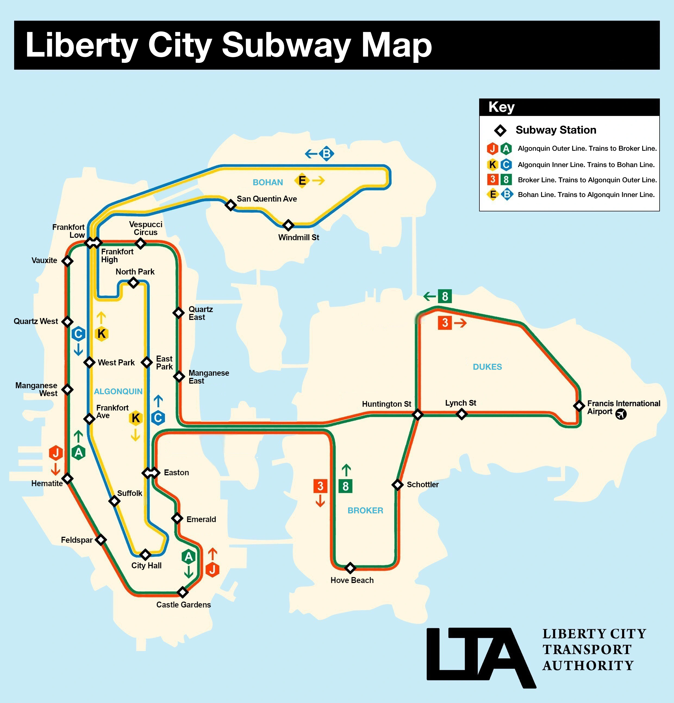

A recreation of the subway map from
the game Grand Theft Auto IV

The map itself, designed by me in Adobe Illustrator and Inkspace
Reason why I made it
It is no doubt that I love open world games, especially when there are lots of activities to do. Grand Theft Auto IV is no exception, set in 2008 in a city clearly based off of New York (and a bit of New Jersey), this game lets us do various things just like it's real life counterpart such as buying a hotdog, take a stroll down Middle Park (Based off of Central Park), Visit the Statue of Happiness (Based off the Statue of Liberty), Have a nice gaze at the billboards in Star Junction (Based off of Times Square) and most importantly, ride the subway.
Details about the subway
The subway system in this game is vastly different and weird compared to its real life counterpart. There are really only 2 subway lines althought it is split into 8 different subway services in each direction, in each borough. And most weirdly, the subway runs in a loop, something the real life counterpart doesn't do except for a few stations in Lower Manhattan. But we have to remember that the whole point of the game is to steal cars and do missions for various people, it's literally in the name "Grand Theft Auto". I'm not saying the subway was unecessary, but atleast Rockstar Games (The developers of the game) bothered to create a replica of the New York Subway for their game as it makes the game world feel more alive. The game itself does have a map for the subway, which is very nicely designed, but I wanted to recreate it in a different style
Original map for the subway in GTA IV, as found in the game manuals.
Process behind making the map
When making the map, I took inspiration from Massimo Vignelli, who designed a simple, and gemotric map of the New York Subway back in 1972. Some qualities the map introduced were heavy distortions of each of the 5 boroughs in order to be able to fit the design. The design process was very easy, since it was just simple lines and shapes all I really used was the pen tool and the shapes tool.